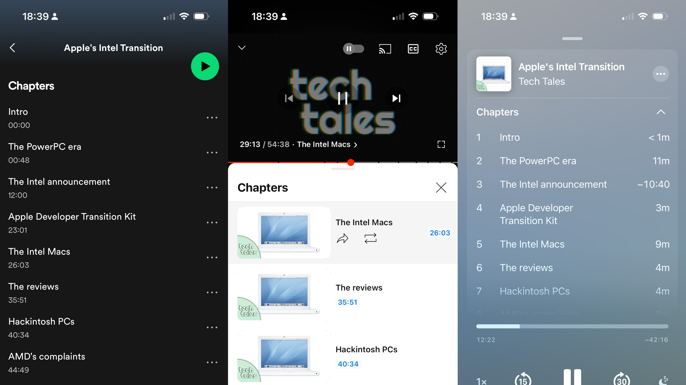
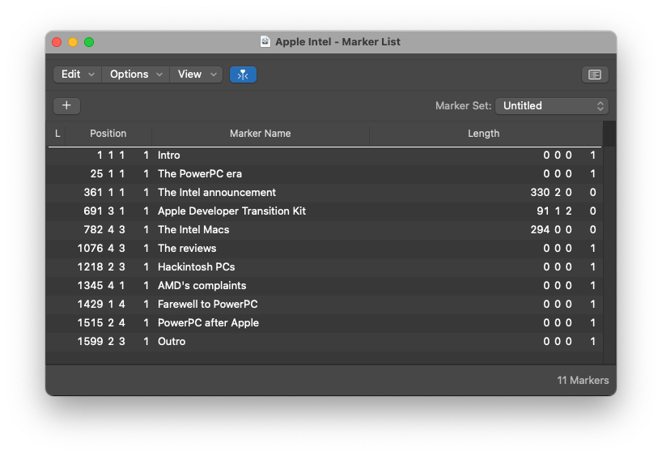
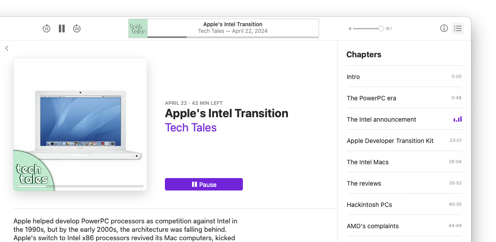
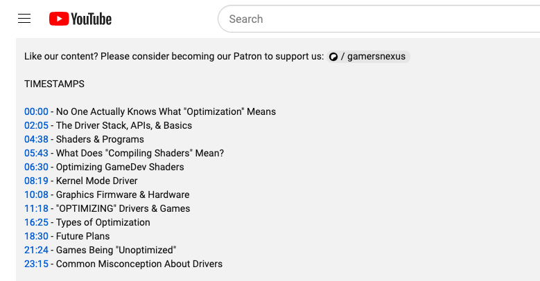
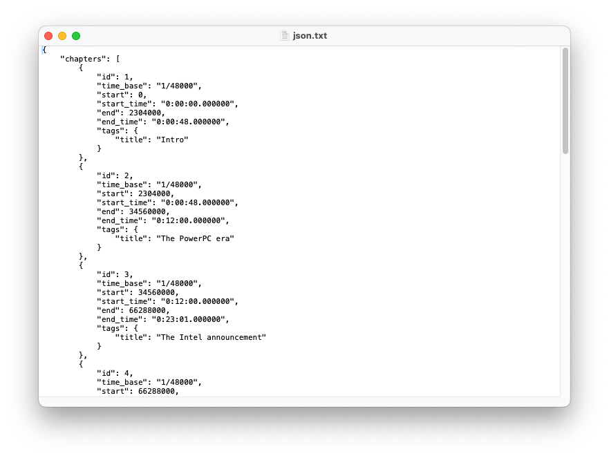
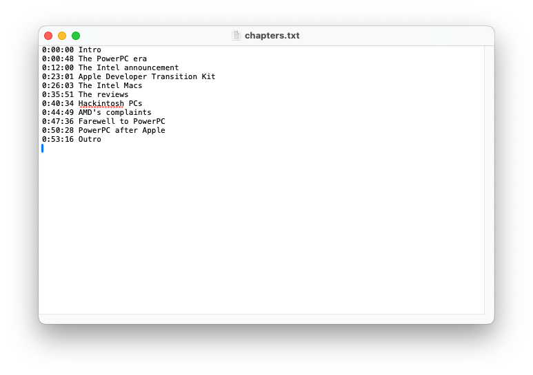
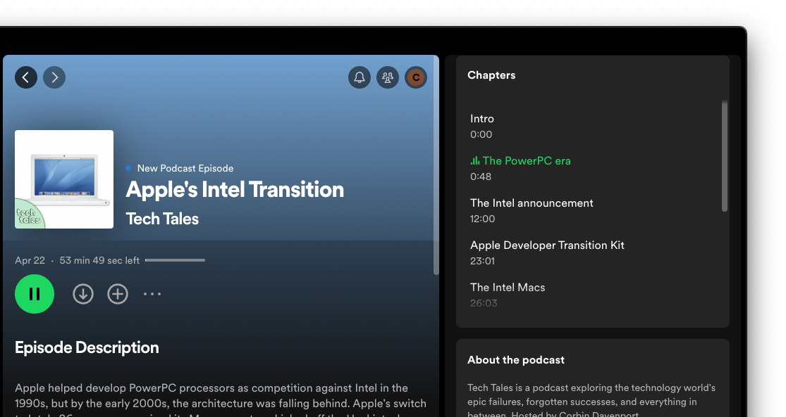

I currently produce and edit the Tech Tales Podcast, and last month, I decided to finally try adding chapter markers to episodes. It turns out that chapter markers in podcasts is pretty complicated, especially if you want listeners to have the best possible experience across YouTube and popular podcast apps. I figured my process was interesting enough for a short blog post, and the steps explained here might help other people.
Audio podcasts are usually distributed as MP3 or MP4 audio files. The show name, episode title, artwork, description, and other data can be encoded in the file using ID3 metadata, though most podcast apps and services now take that data from the show’s RSS feed or another source.
Chapter markers can also be encoded in the file using ID3 metadata, with each chapter having a title and timestamp. When Apple added support for podcasts to iTunes and iPod players in 2005, it included support for “enhanced podcasts,” which could include per-chapter artwork and web links. Apple still supports chapter-specific artwork in Apple Podcasts, but the links feature seems to have vanished at some point, and per-chapter artwork doesn’t seem to be well-supported outside of Apple’s software.
I currently edit Tech Tales episodes with Apple’s Logic Pro, and I use the markers feature to set each chapter. Audacity has a similar “labels” feature.

Logic Pro only seems to save the markers as chapter metadata when exporting as a PCM/WAV file, not when I select MP3. It’s also a bit complicated to export as a mono channel MP3, especially if the project tracks have stereo channels.
My solution for the audio version of the podcast is to export as WAV from Logic Pro, then use the free and open-source FFMPEG tool to create a mono-channel 128kbps MP3 file with the chapter data intact.
ffmpeg -i “original.wav” -map_chapters 0 -ac 1 -b:a 128k -f mp3 “exported.mp3”
The extra step is annoying, but it does give me an MP3 file with the exact desired settings and the chapter data encoded in the file. When I re-encoded an earlier episode with those settings and uploaded it, the chapter markers showed up as expected in Apple Podcasts and Pocket Casts.

There were still two problems. First, there’s a video version I upload to the Tech Tales YouTube channel, and that needs chapter markers. Second, I discovered Spotify wasn’t showing the chapter markers from the MP3 file, even when other players did. It turned out both problems had the same solution.
YouTube supports video chapters, which have to be added as time stamps and titles somewhere in the video description. YouTube gives you some wiggle room with the formatting: the timestamps can be anywhere in the description, and the hour isn’t necessary for videos under one hour (e.g. you can have 18:30 instead of 00:18:30). I’ve also seen different styles for separating the timestamp from the chapter title. For example, a GamersNexus video about Intel Arc Drivers uses a dash surrounded by spaces, while other videos just put a single space between the timestamp and the title.

Spotify supports a few different methods of adding chapters to podcast episodes, but none of them are MP3 encoding, which explains why the chapters weren’t showing up. The easiest method, and the only one accessible to me while using SoundCloud as a host, is adding timestamps to the episode description. The format is similar to YouTube, but with a few additional requirements. There must be at least three chapters, and the first one must start at zero seconds (00:00).
Logic Pro can’t export markers to a text file, and I didn’t really want to type them out each time I published an episode. The best solution ended up involving two different tools. First, I use FFPROBE (a media analysis tool usually included with FFMPEG) to read chapter data from that original WAV file and convert it to JSON format.
ffprobe -i “original.wav” -show_chapters -sexagesimal -of json -loglevel error > json.txt
That gives me a text file with all the chapter data, including detailed start and end times and the titles, in JSON format. That’s not the correct format for YouTube and Spotify, but it can be easily read by other tools. As far as I can tell, FFPROBE on its own can’t create the format I need.

The next step is using JQ to write the chapters with time stamps to a text file, using the data provided in the JSON file. I actually used Microsoft Copilot to help me write the command, because I’m not too familiar with JQ’s options.
jq -r ’.chapters[] | “(.start_time | split(”.“)[0]) (.tags.title)”’ json.txt > chapters.txt
This creates a text file called chapters.txt with the time stamps and titles in the exact required format. Success!

When I copy and paste that into the audio episode description, the chapters appear as expected in the Spotify desktop and mobile applications, and pasting the text into the YouTube video description adds the correct chapter markers to the video player.

You can see it working on the latest Tech Tales episode on Spotify and YouTube. I didn’t expect chapters support to be so annoying, but I’m glad to have a mostly-automated solution.
I created a bash script file to run all three commands at once on my Mac, and then save the final audio MP3 and chapters text file to the Desktop. You can see it on GitHub.
You need FFMPEG/FFPROBE and JQ installed for the commands to work. Since I’m on a Mac, I installed the Homebrew package manager, then ran the below command to install both packages.
brew install jq ffmpeg
I hope this helps anyone else having similar issues with podcast chapters!